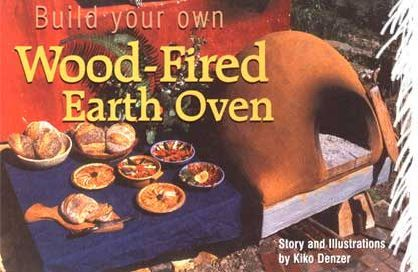
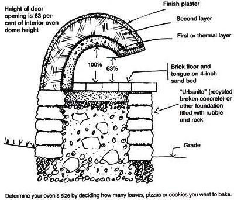
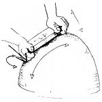
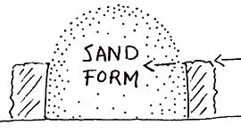
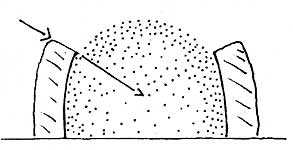
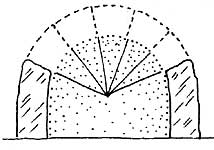
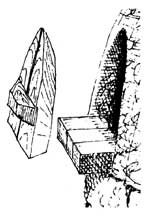
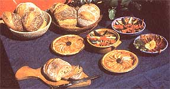

Did you love to make mud pies when you were a kid? Even if you didn't, you can still build this easy outdoor oven that works as well as a custom-built masonry or ceramic model. Cost? Next to nothing. Material? The earth under your feet - one of the best building materials on the planet. And the skills you need are just the ones you were born with.
Follow the steps outlined below and you'll enjoy crusty, chewy and richly flavored bread, pizza and other baked goodies in no time.
Collect your shovel, a wheelbarrow and/or some buckets, a tape measure, scraps of lumber, a plastic tarp and kitchen utensils (for sculpting).
To start, prepare a base for the oven. If you're going to use the oven a lot, you'll want to build the oven floor at waist-height. Use what you have - rocks, broken-up concrete, logs, old metal barrels or even sawhorses. If you don't mind working low, build on the ground.
Twenty to 27 inches is a good size to, the oven floor, but to determine your exact needs make a mock-up of what you want to bake and calculate how much space it takes. Make your oven floor by setting standard red or fire bricks on a level bed of smooth, tamped sand, 4 to 6 inches deep. Used bricks are great, but should be free of old mortar. Set the first one level and solid. Hold the next brick level and just above the sand; gently kiss its long side to the long side of the previous one. Set it down flat and firm. Don't wiggle it. If one brick stands up a bit proud, tap it down to make it flush with the rest.
Shape a pile of moist sand on the floor bricks. (This can he any kind of sand, or even loose topsoil. The form will be covered with your mud mix, then removed to form the oven's interior.) The form should be a few inches higher than half the oven floor's width. [For example: An oven 2-inches wide (one-half of which equals 13.5 inches) should stand 16 to 20 inches high.]
Hold a level across the top; measure the distance to the floor to calculate the interior height of your oven. Multiply it by 63 percent (0.63) to determine the proper height for your oven door.
Write this number down!
Good oven building soil usually is found below the topsoil. It contains clay which, like cement, holds things together. Use it straight out of the ground or mix it with sand. If you have nowhere to dig, look for construction sites, road cuts or river banks. Clay subsoil should feel sticky, slippery and a hit greasy (in contrast, silt and organic matter feel floury and crumbly). Wet, you should he able to roll it into snakelike ropes and bend it easily. The mix is usually one part clay subsoil and anywhere from one to three parts sharp sand (also known its builders or masonry sand); pure clay subsoil also works, but tends to shrink and crack more. Make a test brick or two by mixing sand and soil. Dried, the bricks should be dense and hard with few or no cracks.
A tarp makes mixing mud easier on your back (6x8-foot minimum; bigger is easier). To mix, two people should hold opposite corners of the tarp and roll, but not lift, the mix from side to side. You also can stomp the mud while wearing hoots or better yet, mix it with your bare hands and feet. If you muck around in the mixture, be sure it is free of sharp debris.
Add water a little at a time, then jump in and do the twist, breaking up the clay and mashing the sand into it. Dance until it starts to clump like dough for piecrust.
Pack a hard hall (50 to 100 pats), and drop it from chest height. It should hold together. If it doesn't, acid a little water. If it's too wet, add dry mix. Or you can continue and just allow more drying time, whichever is easier to do.
Cover your sand form with sheets of wet newspaper to keep the mud walls from sticking to the sand form, smoothing the sheets fiat. Next, cover it with a layer of mud 3 to 4 inches thick. To maintain an even thickness, use the width of your hand as a gauge, maintain a clean, square edge on the layer as it arches up and over the form, and angle the top of the mud layer inwards as you go up (see diagram). Press the mud against itself, not against the sand form, and don't worry about the doorway, you'll cut that out later.
When it's done, take a flat board and pack the material until it sits solidly against the form. If it sticks to the board, your mix may have been a bit damp and will need more drying time before you pull the sand form. After the first layer dries, you can add more layers and a fine finish plaster if you want.
If your sand dome was 18 inches high, your doorway should be 63 percent of the height, or 11X inches. The doorway's width should be one-third to one-half of the oven's inner diameter. Scratch a line in the mud where the door will be, cut a hand-sized hole to start and dig a narrow channel into the form.
Before you remove the sand form, the mud walls should be dry enough to resist denting when you poke your finger into them. If your finger easily dents the mud, wait and let the mud get leather-hard. (This can take days or weeks depending on the weather.)
Then, carve out the rest of the door and dig out the rest of the sand form. Remember to stop when you hit the newspaper layer. Refine the doorway so it's smooth and even and so the doorway's inner edge is the right height. Use a spoon, or smooth piece of wood or stone, to rub, integrate and polish the material until it seems right.
Basic finishing can be done by rubbing the oven's exterior smooth with a chunk of milled lumber, a metal trowel or spoon, or a polished rock. More complex shapes and finishing require more mud material with additions like straw, manure, lime and earthen pigments. Make your oven into a sculpture, a hemispherical mural, a bench or a whole building, or keep it simple and abstract.
A rain-soaked oven takes a long time to heat up, so building a roof - as simple or complex as you choose -will protect your oven from the weather. But do not cover the oven with paint or cement! An earthen oven needs to breathe - trapped moisture will destroy it.
To make your door, cut a paper template to fit the opening, then use it to cut out the door. The door doesn't need to fit perfectly, since you can drape it with a wet cloth, which also keeps the door from charring and adds moisture for baking. (You also can soak the door in water or line the back of it with metal or foil.)
To use the oven, build a fire in it and let the smoke come out of the door opening. When the oven is fully dry and has been fired for two to three hours, you'll notice that the black soot on the inside of the dome has disappeared; that's the sign that the oven is ready to use. Rake out the coals and begin baking, putting the door in place to hold in the heat.
Many people build earth ovens for the crisp bread crust and chewy crumb texture that only high-temperature, retained-heat ovens can provide. But wood-fired ovens go far beyond bread, and are capable of roasting, broiling, steaming or braising.
After one oven-building workshop, some new owners wrote this note: "Roasted sweet potatoes, zucchini and onions in a cumin-orange juice glaze with roast garlic pork loin (for the meat eater). Baked apples, then roasted eggplant, squash and leeks, made rosemary polenta, herb-roasted salmon and peach pie. This morning: cinnamon rolls."
Bearing in mind the time, effort and firewood you put into your oven, you'll want to get the most out of it. Awareness, attention and experience will be your best teachers.
With practice, you'll get a reliable feel for the right temperatures. For example, 1 know the oven is ready for sourdough bread baking (400 degrees to 450 degrees) when I can hold a closed fist in the oven for a full eight seconds, or when a handful of flour tossed on the oven's floor takes 10 to 20 seconds to turn dark brown. Thermometers are OK too, but a very hot oven will destroy a typical oven thermometer that only goes up to 500 degrees.
Here are specific examples from our own mud-oven feasts, to give you a brief idea and, we hope, inspiration for what a well-fired oven can cook up. They are in roughly the order you'd bake them, though in an average-size oven (plus or minus 27inches in diameter), you're unlikely to get all this food from one bake. You might need to add a bit more fire, unless your oven is extra-thick and well-insulated:
Three-minute pica with oven-roasted vegetables (winter roots or a summer cacophony of tomatoes, peppers, eggplant and zucchini) at 600 degrees to 700 degrees. This is the highest heat of the oven, and will only last long enough for one or two pizzas, unless you keep a small flame in the oven to insure heat for the top of the pizza.
Sourdough bread (see " Breads Alive! "), croissants, raisin yeast-bread, sticky rolls. Roasted chicken stuffed with whole garlic, dried apples and Asian pears, roasted in gingerwine sauce. · Cake, cookies, braised vegetables, simmered bouillabaisse, baked parsnips and potatoes with rosemary and garlic. Baked beans or soups, rice pudding (which can be left to cook overnight), steamed whole-grain sprouted rye bread, steamed Christmas pudding or fruitcake, oatmeal for tomorrow's breakfast. If your oven is big enough, you could try cooking a flan on top of a covered tray of steaming bread to provide a Bain-made (water-bath) effect. And finally, when the oven is too cool to cook, but still warm, you can incubate yogurt, dry herbs or fruit, or dry your next load of firewood, which will help to make your next oven-firing faster and more efficient.
If the oven floor seems too hot compared to the rest of the oven, place an overturned baking tray on the floor to trap a layer of insulating air and keep pan bottoms from burning. Remember, burnt offerings are part of the process. As you experiment, you'll get used to the vagaries of your own oven and timing. Start with less demanding, wet dishes like soups, stews and braised vegetables, which all cook wonderfully in mud ovens. Keep a lid on the pot to keep moisture in.
Once you have a sense of how well your oven holds heat with what degree of firing, ft's easy to move on to roasts, pies and cakes.
Things that take a long time in your regular oven may cook faster in an earth oven. At a restaurant where I built an oven, the chef tested it with a whole eggplant. When he went to turn it after a few minutes, he was surprised to find it completely cooked. ("Faster than a frickin' microwave!" he said.) Bread that takes 35 minutes at 450 degrees also will cook at 350 degrees, or even 250 degrees, but will take more time to get done. (Bread is considered cooked when the internal temperature reaches 195 degrees to 200 degrees.)
A conventional gas or electric oven bakes bread with a lot of hot air, or convection. An earthen oven uses conduction, convection and radiation, providing faster, more thorough baking and better flavor.
Here's how it works: Build a fire in the hollow earthen dome. The dense walls soak up heat for two to three hours, after which the oven's interior reaches about 700 degrees. Remove coals, sweep the oven floor, and let the temperature stabilize and even decline a bit. Slide your loaves onto the oven's hot floor.
Heat is conducted immediately from floor to loaf, creating a higher, airier loaf (an effect called "oven spring," see photo above). The intense heat drives moisture from the crust, making it crisp and filling the oven with steam.
Convection then disperses that superheated steam, caramelizing sugars in the crust and creating the unique flavor and texture of authentic hearthbaked bread.
The oven walls radiate heat equally throughout the oven-no hot or cold spots-so many loaves bake as thoroughly as one.
An earthen oven holds heat for several hours, so after the bread (or pizza) is done, you can cook anything: vegetables, meats, casseroles, soups, stews, cookies, cakes, pies, or puddings. And when the oven is too cool to cook (usually after several hours), you can use the remaining heat to dry the wood for your next fire.
Kiko Denzer is a sculptor and oven builder living in Oregon. His book, Build Your Own Earth Oven, provides details on building and using wood-fired earth ovens, including selecting soils, firing techniques, insulation, chimneys, sculpture and fancy finish plasters, as well as oven photos and references. To order, send a check for $17.95 to Hand Print Press; PO. Box 576; Blodgett, OR 97326.
|
 |
 |
 |
|
 |
 |
 |
|
 |
 |
|